有限会社 富士タクシー
有限会社 富士タクシー
子どもたちが夢を語れる地域にするために
タクシーからまちづくりへ
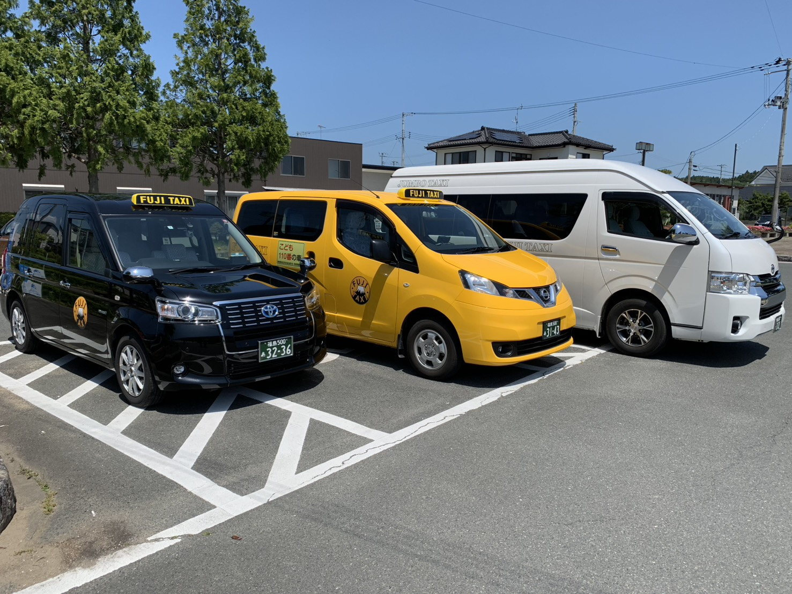
移動が、物語になる。
一度の乗車が、誰かの人生の一場面になる。富士タクシーは、移動を通じて南相馬の物語をつくり続けます。
有限会社 富士タクシー小高区・原町区 2拠点 ／ 創業昭和46年 ／ ジャンボ7台保有TEL 0244-44-2543
 有限会社 富士タクシー
有限会社 富士タクシー
子どもたちが夢を語れる地域にするために
タクシーからまちづくりへ

一度の乗車が、誰かの人生の一場面になる。富士タクシーは、移動を通じて南相馬の物語をつくり続けます。
事業内容：一般乗用旅客運送事業、一般乗合旅客運送事業、自動車整備事業
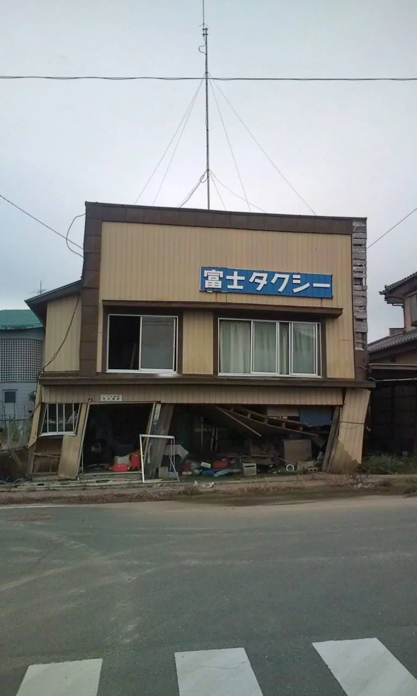
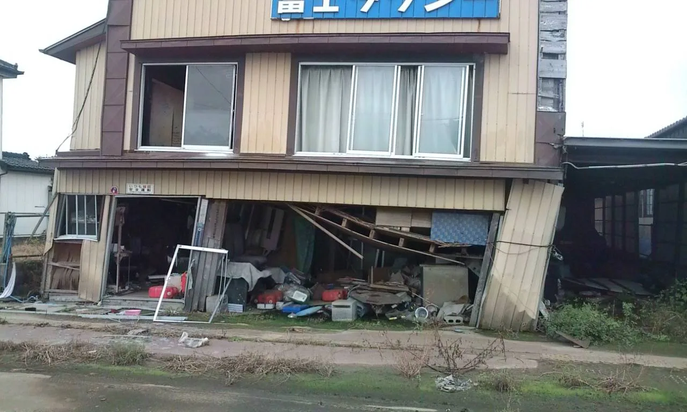
震災を乗り越え、復興とともに歩んできた。 2011年 震災直後の富士タクシー本社
| 1971年 | 有限会社 富士タクシー 創業。小高区にて営業開始。 |
| 2001年 | 旧小高町で、商工会主体の乗合「おだかe-まちタクシー」が試験運行を開始。 全国に先駆けてデマンド交通を本格運行した地域の一つ。富士タクシーも運行に携わる。 |
| 2011年 | 東日本大震災・原発事故により一時休業。地域の復興を支援。 |
| 2017年 | 小高区避難指示解除後に営業再開。地域の復興を牽引。 |
| 2022年 | 原町待機所を開所。原町区エリアの配車・送迎に本格対応。 |
| 2024年 | 多彩な決済方法（クレカ・QR・電子マネー等）を導入。DX推進。 |
| 2025年 | 現着通知サービス開始。お客様を外で待たせない新サービス。 |
| 2026年 | 営業時間を24時まで延長。さらなる利便性向上を実現。 |
| 2026年 | QRコード配車「富士タクQ」を開始。 スマホで読み込むだけで即座に配車依頼が可能に。配車DX推進。 |
| 2026年 | SNS「タク飯」開始。 |
「移動を通じて人と地域をつなぐ」をブランドコンセプトに、富士タクシーは地域課題の解決に取り組んでいます。
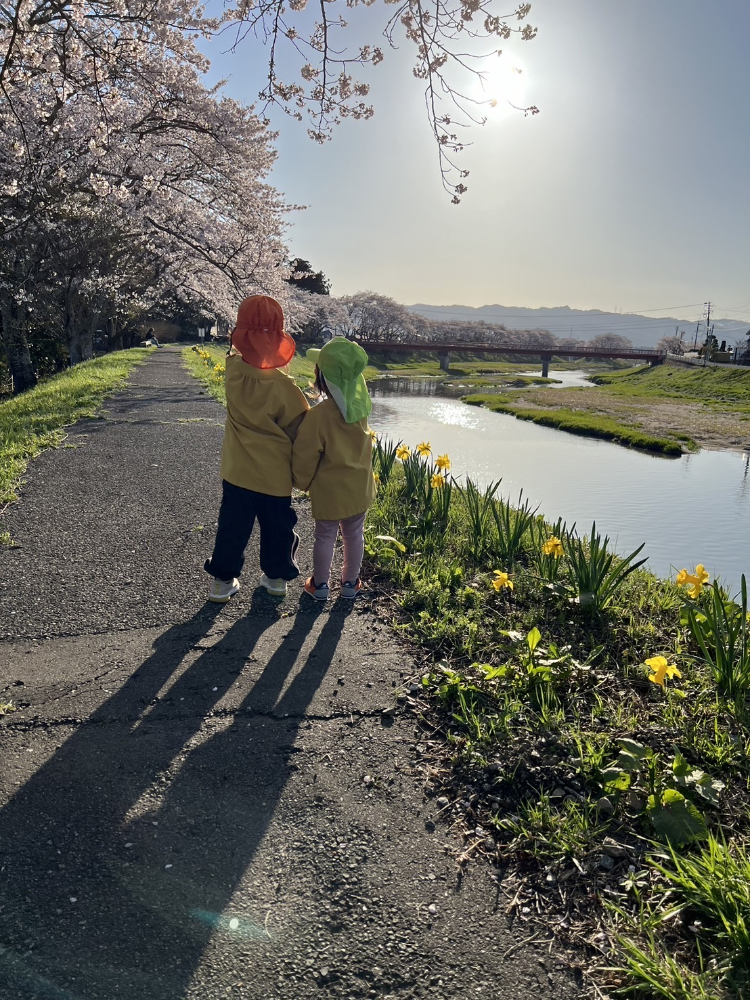
スクールタクシーで安全な通学を支える。
デマンドタクシーで高齢者の生活を守る。
富士タクシーは、移動を通じて南相馬市の未来をつくります。
| スクールタクシー事業 | 令和3年度から小高区の小学校が統合され、遠距離通学が必要な児童が増えました。富士タクシーは教育委員会と連携し、安全・安心な通学をサポートしています。 |
| デマンドタクシー事業 | 旧避難指示区域内へ帰還した住民や高齢者の方々の日常的な移動手段として、乗合タクシーを運行しています。ジャンボタクシー（最大9名）で通院・買い物・日常移動をサポート。 |
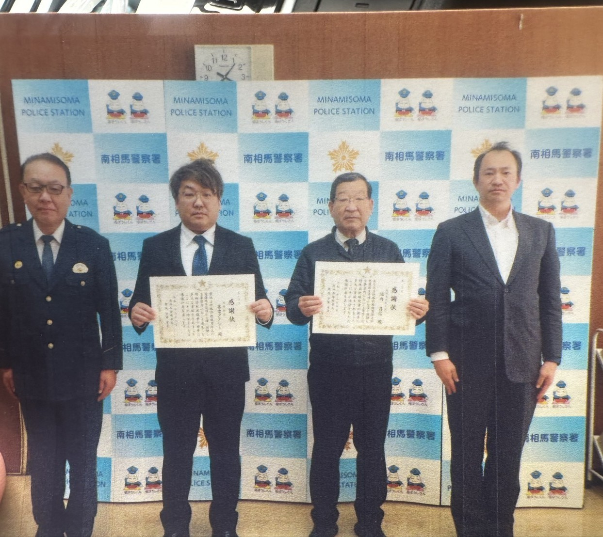
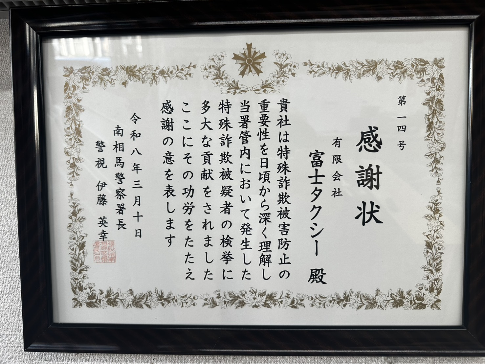
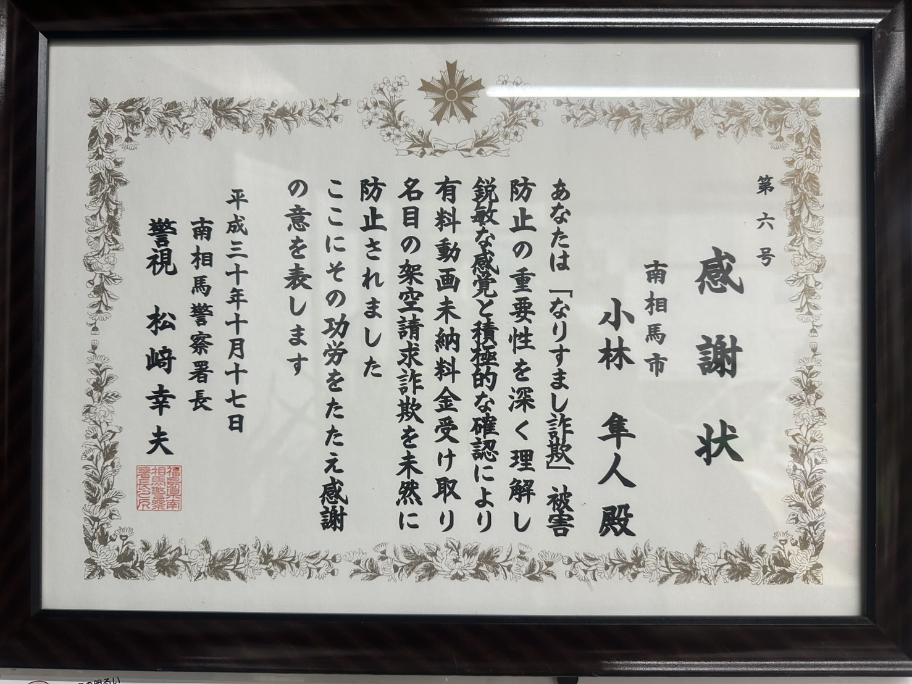
| 年月日 | 贈呈元 | 内容 |
|---|---|---|
| 令和8年3月10日 | 南相馬警察署長 | 有限会社 富士タクシー 特殊詐欺被害防止の重要性を日頃から深く理解し、当署管内において発生した特殊詐欺被疑者の検挙に多大な貢献。 |
| 平成30年10月17日 | 南相馬警察署長 | 小林 隼人 「なりすまし詐欺」被害防止の重要性を深く理解し、有料動画未納料金受け取り名目の架空請求詐欺を未然に防止。 |
一般乗車から観光・福祉・スクールまで、南相馬市の移動をワンストップで。
初乗り700円〜。小高・原町区内から県外まで対応。
最大9名、地域最大級の7台保有。冠婚葬祭・旅行・空港送迎に。
高齢者・帰還住民の通院・買い物を支える乗合タクシー。
小高区の児童・生徒を毎日安全に送迎。部活動にも対応。
相馬野馬追・小高神社・海岸線を地元ドライバーがご案内。
ビジネス・研修・重要顧客の送迎。JTBチケット対応。
介護施設の送迎業務を丸ごとお任せ。時間貸切・定額制でコスト固定化、職員様の負担を軽減。
現在進行中。介護事業所がタクシーを呼ぶシステム化を検討中。
お客様が安心して目的地に到着できるよう輸送の安全を第一に考え、地域の暮らしを支える公共交通としての役割を果たします。
| 教育と誠実さで磨くおもてなし | 定期安全教育・サービス向上教育を徹底し、きめ細やかで満足度の高いサービスを提供します。お客様の笑顔がすべての原点です。 |
| 電脳交通「DS」 クラウド配車システム採用 | 株式会社電脳交通が提供するクラウド型タクシー配車システム「DS」を採用。AIを活用したスマートな配車管理で、より迅速・確実にお客様のもとへ向かいます。 |
| 現着通知サービス | 車両が到着すると自動音声でお知らせする現着通知サービスを完備。外の寒さや雨を気にせず、室内でゆっくりお待ちいただけます。 |
| QRコード配車「富士タクQ」 | 呼びたいを、QRひとつで。スマホで読み込むだけで即座に配車依頼が可能に。電話不要、場所説明不要。QRコードには位置情報が含まれているため、設置場所以外でのご利用はできません。 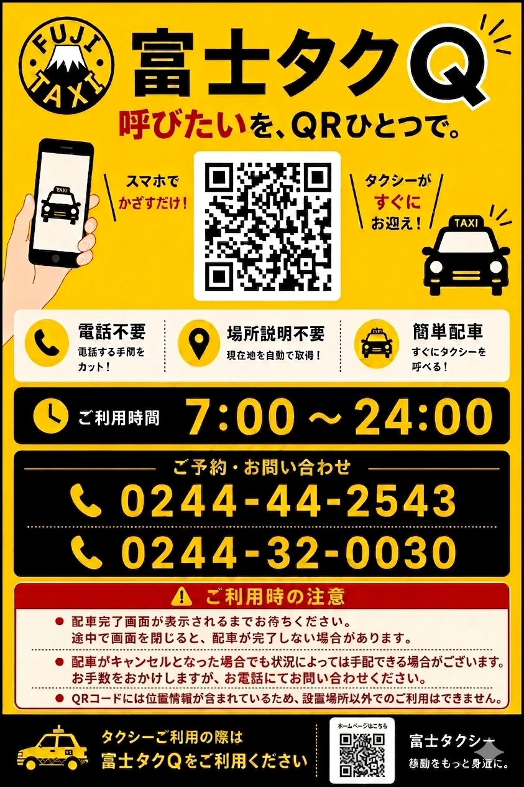 ポスターの例 |
最大9名が1台で移動。大人数でも分乗不要。
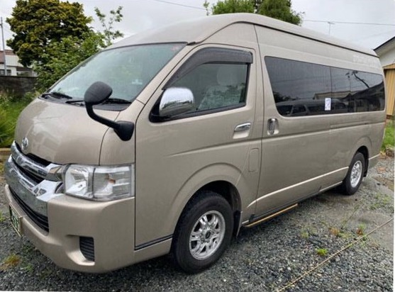
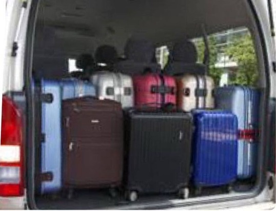
荷物の積載能力に優れた大容量モデル。リアモニター・100V電源装備でビジネス利用にも対応。
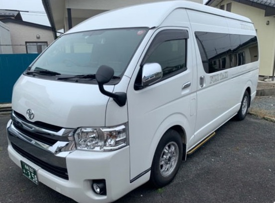
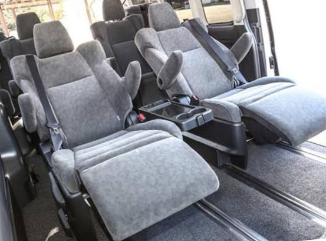
リクライニング・オットマン・リアモニター装備。座席アレンジで少人数の贅沢な移動にも対応。
お客様の用途・人数・荷物量に合わせた最適な車両をご用意しています。
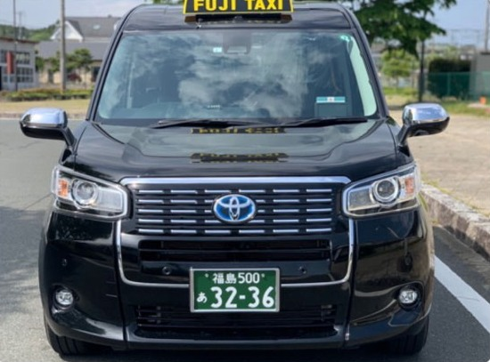
| JP | 乗車席空間が広く、車内装備も充実。USB充電・シートヒーター完備で長距離移動も快適。 |
| NV | 大型スーツケースを複数積載できる広大な荷室が最大の特徴。空港・駅への送迎や出張利用に最適。自動ステップ・手摺装備で高齢の方にも安心です。 |
| シエンタ | 低段差乗降口でスムーズな乗り降り。USB充電・シートヒーター完備の快適な車内空間。 |
運賃料金には消費税10%が含まれております。
| 車種 | 初乗り（1.0kmまで） | 加算運賃 | 時間制運賃（30分ごと） |
|---|---|---|---|
| 普通車 | 700円 | 260mごとに100円 | 3,670円 |
| 大型車 | 900円 | 177mごとに100円 | 5,390円 |
| 特大車（ジャンボ） | 980円 | 173mごとに100円 | 5,530円 |
| 割増料金 | 深夜早朝割増 2割増 |
| 割引（各1割引） | 身体障害者割引、知的障害者割引、遠距離割引（5,000円超の額）、運転免許証納者割引 |
※ 速度10km以下の走行時は時間距離併用制が適用されます。詳細はお問い合わせください。
現金・クレカ・QR・IC・チケット、10種以上に完全対応
| タクシーチケット対応 | 富士タクシー独自のタクシーチケット・JTBタクシーチケット・愛のタクシーチケット・NO.1タクシーチケットに対応。法人の経費精算をシンプルに。 |
| クレカ・QR・電子マネー | VISA / Mastercard / JCB / AMEX / PayPay / AEON Pay / 交通系IC など10種以上対応。 |
| 法人請求書払い | 法人様の請求書払いについては要相談。継続的なご利用についてもお気軽にお問い合わせください。 |
| 2027年4月 開始予定 | 原町営業所 開始原町待機所から営業所へ変更。お客様にとって、より身近になります。 |
| 2027年4月 開始予定 | 富士タクシーアプリ 開始より呼びやすくなります。電脳交通の支援を受け、富士ブランドを確立していきます。 |
| 2027年度 導入予定 | 自動点呼 導入本社・原町営業所 |
| 今後 | 自動運転自動運転にも取り組んでいきたいと考えています。 |
お問い合わせからご乗車まで、わかりやすい3ステップです。
本社（0244-44-2543）またはWebフォームよりご連絡ください。まずはお気軽にどうぞ。
ご希望の日時・人数・乗車場所・目的地をお知らせください。詳細を確認のうえ、担当者より折り返しご連絡いたします。
ご指定の日時・場所へ確実にお迎えにあがります。現着通知もお伝えできますので、お待たせしません。
地域の移動でお困りのことは、富士タクシーへご相談ください。
FAX 0244-44-2463
〒979-2124
福島県南相馬市小高区本町一丁目57番地
FAX 0244-32-0008
〒975-0037
福島県南相馬市原町区北原字本屋敷181番地1
fuji-taxi.odaka@white.plala.or.jp ｜ https://fujitaxi-minamisoma.com